|
PROJECT
5: DATAPATH 1. Build a circuit that implements a 12-bit
program counter (PC)
Hier moesten we een 12-bits program counter
bouwen, wat wat ingewikkelde logica met zich meebracht. We hebben twee
multiplexors gebruikt die kiezen tussen de default case
(instructionadres += 1), de branch relative (instructionadres +=
branch value + 1) en de branch absolute (instructionadres = branch
value). · Voor
de default case, wanneer de branch absolute en branch
relative inputs beide gelijk zijn aan 0 of beide gelijk zijn aan 1, is
het selectorbit voor beide multiplexors 0. In dit geval kiest de eerste mux
het huidige instruction address, en de tweede mux kiest het huidige
instruction address verhoogd met 1, door middel van een adder. 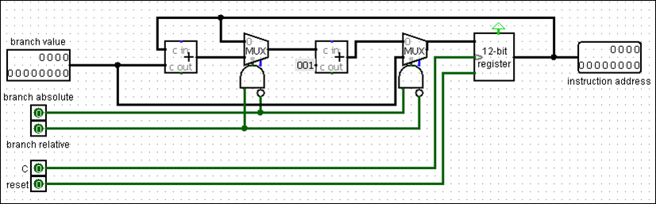 · Voor
de branch relative case, wanneer branch absolute gelijk
is aan 0 en branch relative gelijk is aan 1, is het selectorbit voor
de eerste mux 1 en voor de tweede mux 0. In dit geval kiest de eerste mux het
huidige instruction address verhoogd met de branch value, en de tweede mux
kiest het nieuwe address verhoogd met 1. 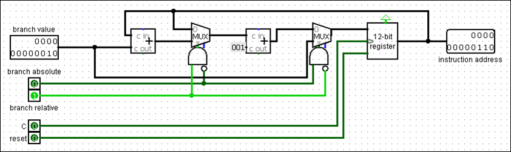 ·
Voor de branch absolute case,
wanneer branch absolute gelijk is aan 1 en branch relative
gelijk is aan 0, is het selectorbit voor de eerste mux 0 en voor de tweede
mux 1. In dit geval kiest de eerste mux het huidige instruction address, en
de tweede mux kiest de waarde van de branch value input. Hierdoor heeft het
instruction address geen verband met de vorige waarde. 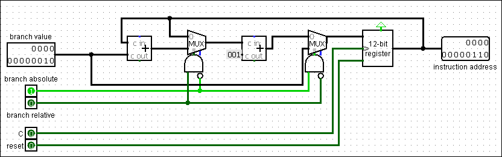 2. Implement a partial datapath of 16-bit
instructions and 12-bit data words …
Onze
datapad heeft 9 outputs en 3 inputs. De outputs zijn de registers van onze
register file, van r0 tot r7, en de inputs zijn de current instruction, het
clock signal en de reset button. 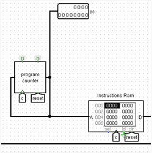 DDe datapad bestaat uit verschillende onderdelen. We beginnen links, waar het clock signal, de reset button, en onze program counter staan, die we in de vorige vraag hebben gebouwd. We hebben de branch absolute en branch relative op 0 gezet, omdat onze datapad geen branch-instructies uitvoert. De waarde van onze program counter wordt doorgegeven aan de output pc en aan de Instruction RAM, die als output de huidige instructies levert.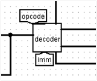 Vervolgens wordt de current instruction doorgegeven aan de decoder, die de instructie decodeert en de volgende outputs genereert:<opcode> , <Rd> , <Rs> , <Rt> , <Func> , <Immediate> Met
deze waarden kunnen we de instructie selecteren en de juiste operaties
uitvoeren volgens de tabel: 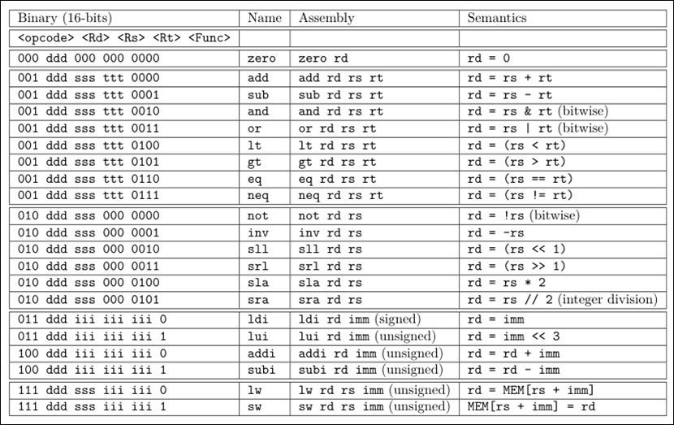 Boven
de decoder bevindt zich het controller circuit, dat de volgende
outputs genereert: · RegWrite: Hiermee kunnen we naar de Register File schrijven. 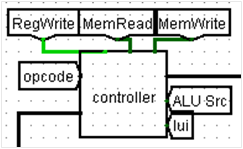 ·
MemRead: Hiermee
kunnen we woorden uit de Data RAM lezen. ·
MemWrite: Hiermee
kunnen we woorden in de Data RAM schrijven. ·
ALU Operation: Hiermee
wordt bepaald welke ALU-operatie wordt uitgevoerd. ·
ALU Src: Hiermee
wordt gekozen tussen de tweede waarde, rt of een immediate. ·
Lui: Hiermee
bepalen we welke immediate wordt gebruikt voor load-instructies,
namelijk de normale immediate of imm << 3. 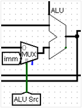 Beneden, naast de decoder, staat onze Register File, die de registers bevat.Rechts
van de Register File bevindt zich de ALU, die veel operaties uitvoert.
De eerste output van de Register File, S, wordt doorgegeven als de
eerste input van de ALU. Voor de tweede input kiezen we tussen een register
of een immediate waarde. 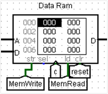 De
output van de ALU wordt vervolgens doorgegeven als een adres aan de Data
RAM, waarmee het adres wordt bepaald dat nodig is voor lw of sw
instructies. Daarnaast wordt deze output ook gebruikt als de waarde rd,
die in de Register File wordt geschreven als de opcode 0001, 0010 of
0100 is. Helemaal
onderaan bevindt zich een multiplexor met de selectorbits opcode,
die bepaalt welke data wordt geschreven in de Register File: 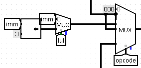 ·
Voor opcode =
0000:
wordt 000000000000 geschreven in rd. ·
Voor opcode =
0001:
wordt de output van de ALU geschreven in rd. ·
Voor opcode =
0010:
wordt ook de output van de ALU geschreven in rd. ·
Voor opcode =
0011:
wordt ofwel de immediate geschreven voor ldi, of de immediate
geshift met 3 (<< 3) voor lui. ·
Voor opcode =
0100:
wordt opnieuw de output van de ALU geschreven in rd. ·
Voor opcode =
0111:
wordt de word uit de Data Memory geschreven in het register rd,
indien het een lw (load word) instructie betreft. Dit
is het volledige circuit: 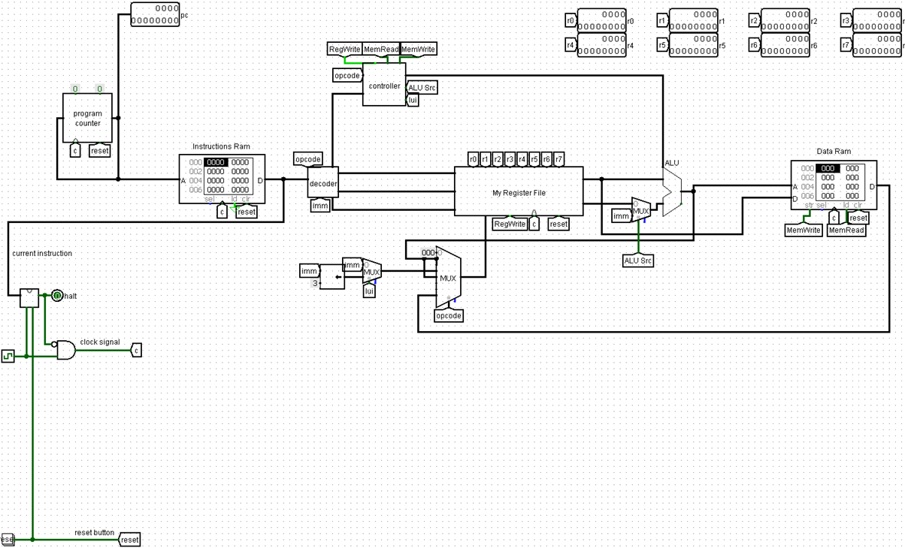 3. Construct a decoder circuit that reads
instructions from the instruction
Hier
moesten we een decoder circuit maken met de volgende inputs en
outputs: 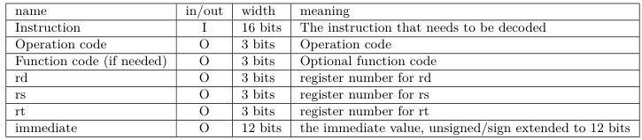 ·
We hebben de operation code
gegenereerd door de bits [13-15] te extraheren uit de instructie. ·
De function code wordt
gegenereerd door de bits [0-3] te extraheren uit de instructie. ·
Rd wordt
gegenereerd door de bits [10-12] te extraheren uit de instructie. ·
Rs heeft twee
gevallen: o
Als de instructie addi, subi
of sw is, dan is rs de bits [10-12]. o
Anders is rs de bits [7-9]. ·
Rt is altijd de
bits [4-6]. ·
Immediate wordt
geëxtraheerd volgens drie gevallen: o
Voor een ldi instruction is de
immediate de bits [1-8], waarbij we de MSB behouden voor alle nieuwe
bits van de 12-bits waarde, omdat deze signed is. o
Voor een lui of arithmetic
instruction is de immediate ook de bits [1-8], maar de nieuwe bits
kunnen we op 0 zetten, omdat deze unsigned is. o
Voor een lw- of sw-instructie
is de immediate de bits [1-6], en de nieuwe bits zetten we op 0, omdat
deze unsigned is. Dit
is het volledige circuit: 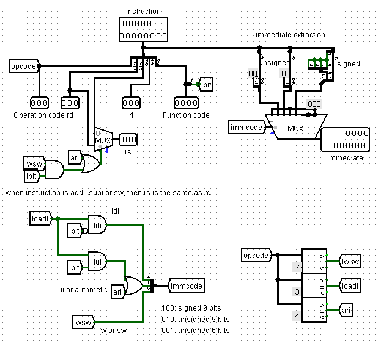 4.
Building a controller circuit
Hier
moesten we een controller circuit bouwen met de opcode en functiecode
als inputs. We hebben besloten om 6 outputs te definiëren: ·
RegWrite: Deze output
wordt gebruikt voor de write input van onze Register File. Als deze op
1 staat, kunnen we schrijven naar de Register File. Dit is het geval voor
alle instructies behalve sw. 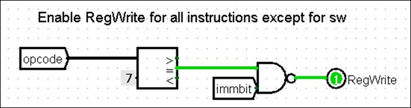 ·
MemRead: Als deze
output op 1 staat, kunnen we lezen van de Data RAM door deze aan de load
input te koppelen. 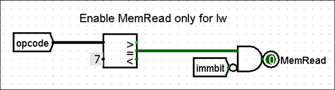 ·
MemWrite: Deze output
stelt ons in staat om naar de Data RAM te schrijven. Dit gebeurt
uitsluitend voor de sw-instructie. 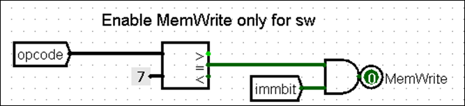 ·
ALU operation: Deze 4-bits
output bepaalt welke operatie door de ALU wordt uitgevoerd. Onze ALU
ondersteunt al 16 operaties, dus we hoeven alleen de juiste ALU-code door te
geven. Dit doen we met een multiplexor, waarbij de opcode als
selectorbits wordt gebruikt: o
Voor opcode =
0000:
De func code wordt direct doorgegeven als de ALU-operatie. o
Voor opcode =
0001:
De func code wordt opnieuw doorgegeven als de ALU-operatie. o
Voor opcode =
0010:
De func code + 8 wordt gebruikt als de ALU-operatie. Dit is nodig
omdat de ALU-codes voor unary-operaties van 8 tot 13 lopen. o
Voor opcode =
0011:
De ALU-operatie is hier niet van belang, omdat een immediate wordt geladen in
de Register File zonder dat er een ALU-bewerking nodig is. o
Voor opcode =
0100:
Een multiplexor wordt gebruikt met het LSB van de instructie als selectorbit: § Als
het LSB = 0, is het een addi-instructie en is de ALU-operatie 0000
(addition). § Als
het LSB = 1, is het een subi-instructie en is de ALU-operatie 0001
(subtraction). o
Voor opcode =
0111:
Voor memory instructions (lw en sw) wordt addition uitgevoerd
om de offset bij de waarde van rs op te tellen. Daarom is de
ALU-operatie 0000. 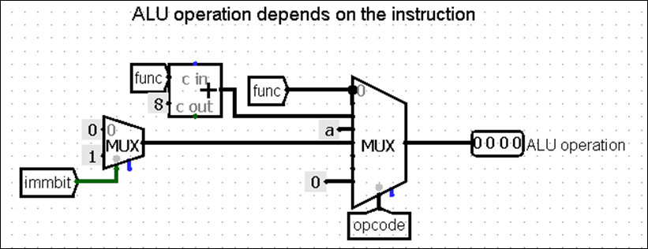 ·
ALUSrc: Deze output
bepaalt wat de tweede operand van de ALU wordt. o
Als ALUSrc = 0, wordt rt
gekozen als de tweede operand. o
Als ALUSrc = 1, wordt de immediate
gekozen. De immediate wordt geselecteerd wanneer de opcode 0011, 0100
of 0111 is. 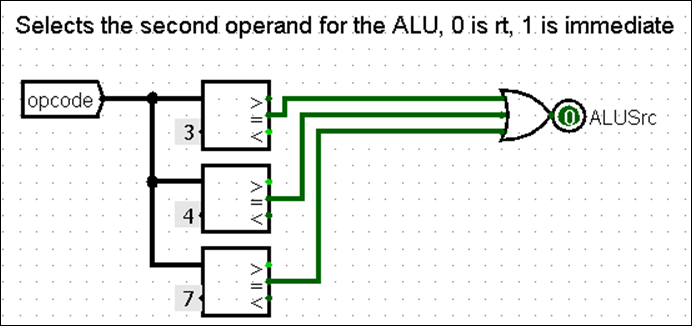 ·
Lui: Deze output
controleert of de instructie een lui-instructie is. Hiermee bepaalt
een multiplexor of een normale immediate in rd wordt geplaatst
of een immediate die met 3 is geshift. 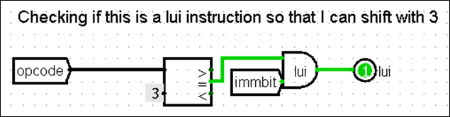 5. Run the test files for your datapath.
We
hebben alle tests uitgevoerd, en ze zijn allemaal geslaagd. 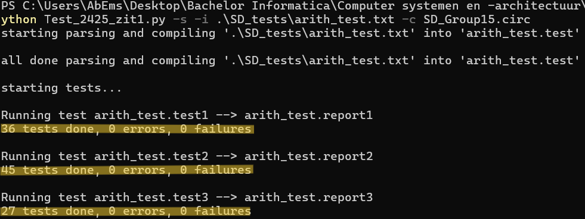 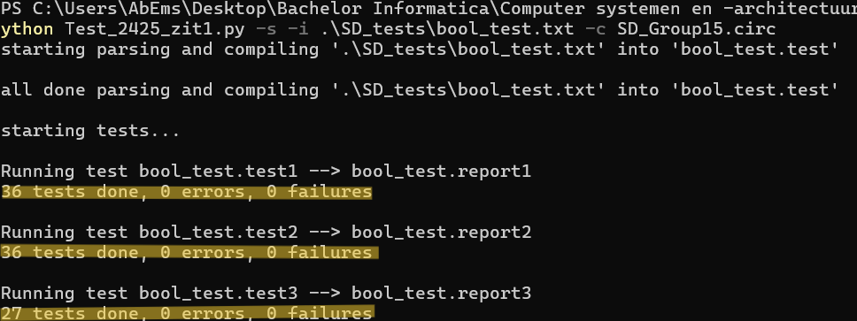 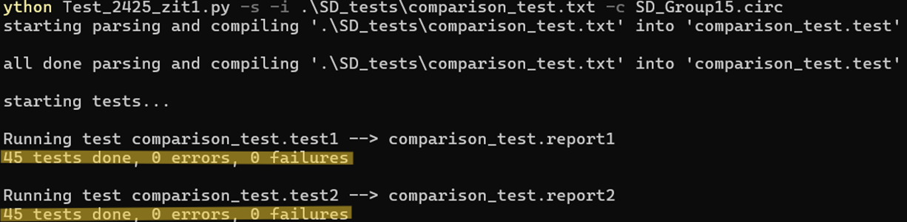 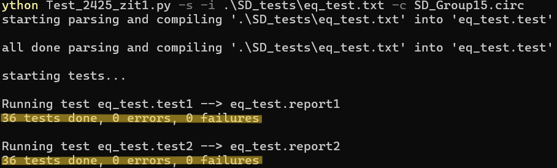 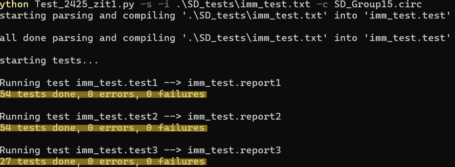 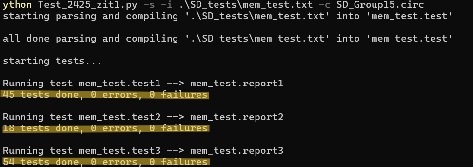 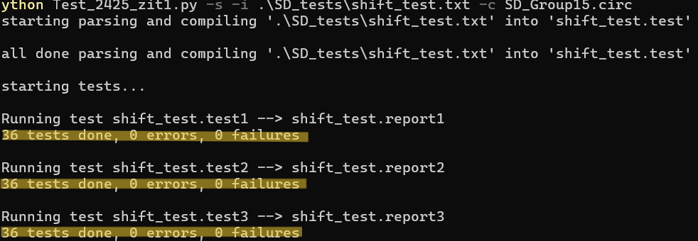 |